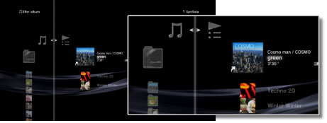
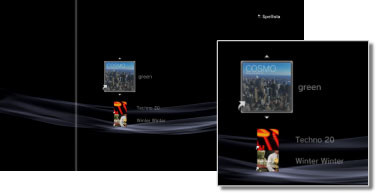

Musik > Användning av spellistor > Redigera spellistor
Redigera spellistor
Du kan lägga till, radera och arrangera om spåren i spellistan.
Lägga till musik i spellistor
1. |
Välj |
|---|---|
2. |
Välj den spellista som du vill redigera och tryck sedan på |
3. |
Välj [Redigera].  |
4. |
Välj med hjälp av riktningsknapparna det spår som du vill lägga till i spellistan från de spår som finns sparade på hårddisken. |
 (Musik) >
(Musik) >  (Spellistor).
(Spellistor). -knappen.
-knappen. -knappen för att avsluta redigeringen.
-knappen för att avsluta redigeringen.Radera spår från spellistor
1. |
Välj |
|---|---|
2. |
Välj den spellista som du vill redigera och tryck sedan på |
3. |
Välj [Redigera]. |
4. |
Välj det spår du vill radera från spellistan till höger, och tryck sedan på |
 -knappen.
-knappen.Tips!
- Även om ett spår har raderats från en spellista, är inte musikfilen raderad från hårddisken.
- Om en spår som har lagts till i spellistan raderas från hårddisken, raderas den automatiskt från spellistan.
Ändra ordningen på musikspåren i spellistan
1. |
Välj |
|---|---|
2. |
Välj den spellista som du vill redigera och tryck sedan på |
3. |
Välj [Redigera]. |
4. |
Välj det spår som du vill flytta, och tryck sedan på  |
5. |
Använd |
 -knappen.
-knappen.
 -knapparna för att flytta spåret till önskad plats, och tryck sedan på
-knapparna för att flytta spåret till önskad plats, och tryck sedan på